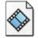
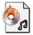

Conor McCutcheon
Product/Brand Design
Animation & Motion Graphics

Filmmaking
Consistency
Mixed Media

what i'm listening to
 Documents
Documents Notepad
Notepad MS Paint
MS Paint Code Archive
Code Archive Control Panel
Control Panel Log Off
Log Off Conor
Conor
 Internet Explorer
My Files
Internet Explorer
My Files
11:20 PM